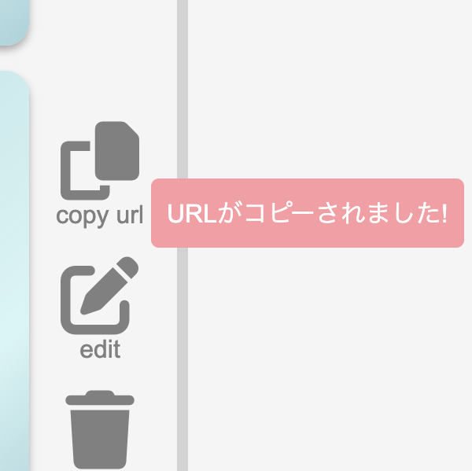
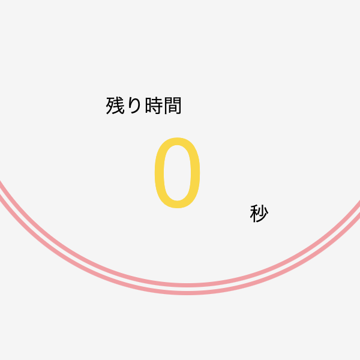

IceClasher（アイスブレイク用タイマー）
開発環境
Ruby / Ruby on Rails / JavaScript / MySQL / GitHub / Render / Visual Studio Code
-
概要
制作時間 60時間 URL https://iceclasher.onrender.com/ -
動作テスト
テスト用アカウント
mail test@test PASS 123456
OUTLINEアプリケーションの概要
オリジナルアプリケーションとして、オンライン上でのアイスブレイクを手助けするタイマーアプリケーションを開発しました。
主な機能は、ユーザー登録機能、ラウンジ(コミュニティーごとの設定)の管理機能、タイマー機能です。
ユーザー登録をして新しいラウンジを作ると、トップページにラウンジ一覧が表示されます。それをクリックすると、メインのタイマーがあるページに遷移することができます。
左下のフォームでメンバー、右下のフォームでトピックを追加できます。
メンバーとトピックが入力されている状態でタイマーを開始すると、登録されているメンバーとトピックの内容がランダムにタイマーの上部のディスプレイに表示されます。
タイマーのカウントが0になると、またランダムで、メンバーとトピックが表示されます。全てのメンバーが話し終えたら、終了判定になり、タイマーの色が変わります。
また、スキップボタンを押すと、タイマーを待たずに次のメンバーとトピックが表示されます。リセットボタンを押すと最初からやり直すことができます。
-
開発に至った経緯
普段、オンライン上での通話をするときに、オフラインでの会話に比べて話がしにくいという課題を感じることがありました。
私は朝会や読書会に参加することが趣味でしたが、コロナ禍になってからオンラインに切り替わることが多くなりました。しかし、オンラインでは音声の遅延によりタイミングの見極めが難しく、会話が盛り上がりににくいと感じることがありました。また、一度に話せる人が限られているため全員が会話に加わることは難しいと感じています。
そこで、スポーツなどで使われるインターバルタイマーを参考に、オンライン上でのアイスブレイクの助けとなるタイマーアプリの開発をすることを決意しました。
-
開発で工夫したこと
1.仲間内でメンバーやトピック等の設定を共有できるラウンジ共有機能
urlとあいことばをコミュニティ等で共有することで、それらを知ったコミュニティの仲間はログイン不要でそのコミュニティに最適化されたタイマーを使うことができます。2.タイマー機能を非同期で実行できる機能
アイスブレイク用のアプリなので、アイスブレイクで使用される画面ではストレスを感じさせない工夫が必要でした。そこで、タイマーの機能はもちろん、メンバーやトピックの編集も非同期通信で実行できる仕組みにしました。いずれも、コミュニティの知人に協力してもらい、ヒアリングを行いながら改善を行いました。
-
今後実装したいと思っていること
1.メンバーの出欠状況切り替え機能
現状の機能では、メンバー全員が選択される仕様になっているので、欠席者がいる場合は、欠席者の情報を削除してからタイマーを実行する必要があります。メンバーの出欠状況を設定でき、欠席者は話す人に選ばれない仕様にすれば、事前の準備時間が短くなり、よりスムーズに進行できると考えました。
2.残り時間の視覚化
現状では残り時間が数字で表示されています。しかし、アイスブレイク中は話の内容にリソースを使うことが想定されます。そのため、少しでも直感的に残り時間がわかるような工夫が必要だと考えています。